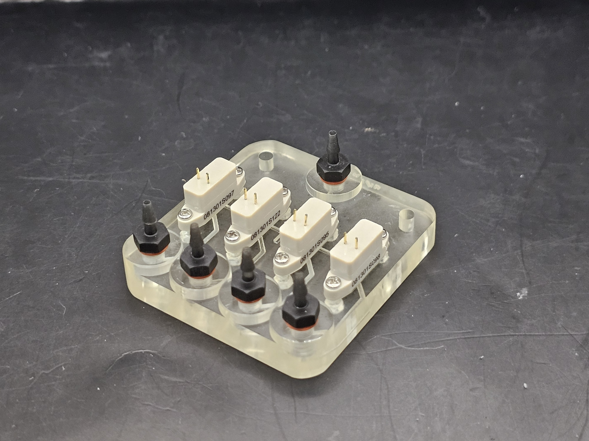
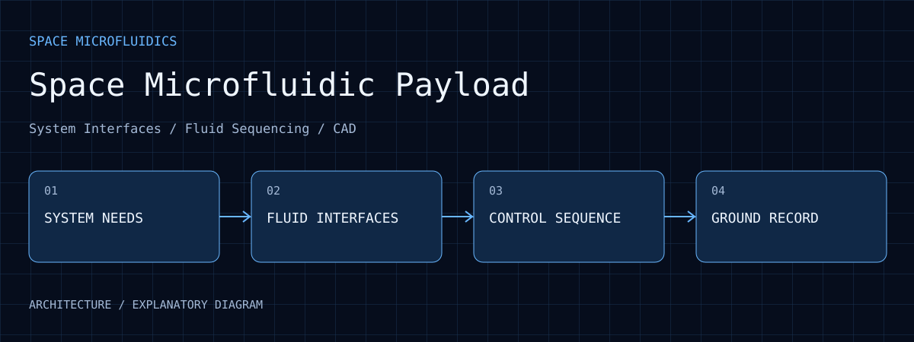

工程產出
目前工作包含架構與介面文件、控制測試程式、晶片／機構整合及驗證規劃。
Space Microfluidic Payload
面向預計太空實驗的樣品處理與載荷整合開發，整理系統需求、子系統介面、幫浦／微閥序列控制及晶片／機構 CAD。
01 / EVIDENCE

取自太空生醫簡報中自身專案的組裝頁，而非前段引用的衛星文獻圖片。照片呈現微閥、歧管與管路接頭的實體整合，供地面流體準備及介面討論；不代表飛行載荷，也不能證明流量、混合比、漏液／耐壓、熱性能或太空環境資格已通過。
查看原圖 ↗目前工作包含架構與介面文件、控制測試程式、晶片／機構整合及驗證規劃。
專案處於開發與原型整合階段，地面設備與飛行端需求依版本區分。
公開介紹選入地面微閥歧管組裝照片，呈現流體介面的實體整合；文獻衛星圖片、任務細節與設計參數不列入展示。
02 / WALKTHROUGH
樣品從哪裡進入、經過哪段流路、由哪個閥切換，必須和電源、控制訊號及接頭位置一起定義。介面文件讓不同子系統能對照同一個操作步驟。
幫浦／微閥序列與控制測試程式對應樣品處理流程。公開照片中的歧管呈現實體流路連接，支持組裝配置的說明，但單張照片不能證明密封、流量或耐壓。
晶片、機構及控制版本需要一起記錄，才能知道一次地面測試使用哪套配置。若接頭、管路或控制條件改變，既有結論不能直接套用到下一版。
這項工作的核心是跨子系統整合。地面功能、環境測試與飛行資格是不同層級；目前公開內容停留在可披露的原型與設計範圍。
03 / PURPOSE
分層規劃地面準備、樣品承載與任務資料需求，建立可供原型整合的設計基線。
04 / ARCHITECTURE

整理樣品處理、地面準備與任務資料需求，建立整合設計的共同基線。
以子系統介面描述流體、電氣與機構之間的連接責任。
幫浦／微閥序列與地面測試程式對應操作步驟。
晶片與機構 CAD 支援裝配討論，驗證規劃依版本記錄地面與飛行端要求。
05 / WORKFLOW
將樣品、操作和資料需求轉成可核對的介面問題。
對齊流體、控制與機構的連接方式。
以地面控制和測試流程檢查步驟與資料回饋。
保存已完成的原型範圍與後續驗證條件。
06 / ANALYSIS
子系統能單獨運作後，仍需確認供電、流體接頭、控制訊號與資料格式能共同配合。介面文件讓整合差異可被追蹤。
地面原型可以支持功能討論；振動、溫度或任務環境中的表現需要指定條件的獨立驗證。
將需求、原型與測試結果對應到版本，有助於辨識哪些結論可以沿用，哪些必須重新確認。
07 / REPRODUCE
08 / LIMITS
未公開、開發中；未宣稱完成發射、在軌操作或振動／環境資格驗證，不公開任務細節與設計參數。
09 / SOURCES
入選圖像保留原始畫面內容，圖說分別註明原型照片、操作介面、歷史紀錄、分析輸出或模擬。